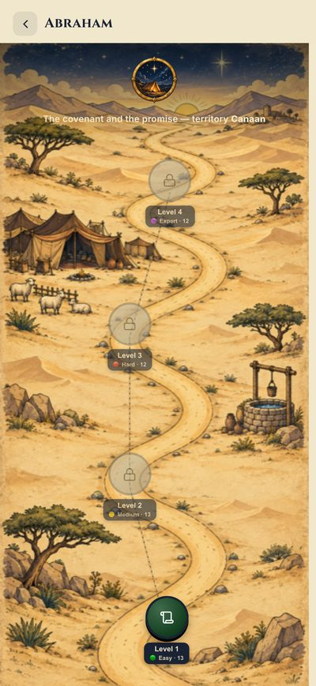
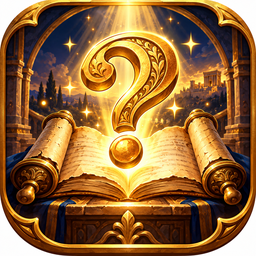

Joshua and Canaan Bible Quiz
27 multiple-choice Bible questions. Rahab, the walls of Jericho, the conquest of Canaan and the twelve tribes. Tap an answer to check it. Every answer comes with a short explanation and the Bible reference.


1. Who succeeded Moses as leader of the people of Israel?
Show answer
A) Joshua (Joshua 1:1-2). The LORD commanded Joshua son of Nun to lead the people after Moses' death.
2. What river did the Israelites cross on dry ground, to enter Canaan?
Show answer
B) The Jordan (Joshua 3:14-17). The waters of the Jordan stopped, and the people crossed on dry ground, as they once had at the Red Sea.
3. What city fell after the Israelites marched around it for seven days, blowing trumpets?
Show answer
C) Jericho (Joshua 6:20). At the sound of the trumpets and the people's shout, the walls of Jericho collapsed.
4. Who hid the Israelite spies sent to Jericho, and was spared when the city fell?
Show answer
A) Rahab (Joshua 2:1; 6:25). Rahab, a woman of Jericho, hid the spies on her roof and was spared along with her family.
5. How many stones did the Israelites take from the bed of the Jordan, as a memorial?
Show answer
D) 12 (Joshua 4:1-8). One man from each tribe took a stone from the bed of the Jordan — twelve in all.
6. What sign did Rahab ask the spies to leave at her window, so she would be spared?
Show answer
C) A scarlet cord (Joshua 2:18). The spies said to her, "Tie this scarlet cord in the window through which you let us down."
7. What did Joshua command the Israelites to do at Gilgal, before beginning the conquest of Canaan?
Show answer
B) Be circumcised (Joshua 5:2-8). Joshua made flint knives and circumcised the Israelites at Gibeath Haaraloth.
8. What stopped falling from the sky, once the Israelites ate from the produce of the land of Canaan?
Show answer
A) Manna (Joshua 5:12). The manna stopped the day after they ate this food from the land; the Israelites no longer had manna.
9. Who appeared to Joshua near Jericho, with a drawn sword in his hand?
Show answer
D) The commander of the LORD's army (Joshua 5:13). Joshua looked up and saw a man standing in front of him with a drawn sword in his hand.
10. What was Joshua commanded to do, on learning that the place where he stood was holy?
Show answer
B) Take off his sandals (Joshua 5:15). "Take off your sandals, for the place where you are standing is holy."
11. How many priests, with trumpets, marched ahead of the ark, circling Jericho?
Show answer
C) Seven priests with seven trumpets (Joshua 6:4). "Have seven priests carry trumpets of rams' horns in front of the ark."
12. How many times did the Israelites march around Jericho, on the seventh day?
Show answer
B) Seven times (Joshua 6:15). On the seventh day, they got up at daybreak and marched around the city seven times, in the same manner.
13. What was the name of the place where the Israelites first camped, after crossing the Jordan?
Show answer
D) Gilgal (Joshua 4:19). The people came up out of the Jordan... and camped at Gilgal, on the eastern border of Jericho.
14. What words of encouragement did Joshua receive from the LORD, right at the beginning of his mission?
Show answer
A) "Be strong and courageous" (Joshua 1:6). "Be strong and courageous, because you will lead these people to inherit the land I swore to their ancestors to give them."
15. What did Achan steal from the plunder of Jericho, though the people had been commanded to destroy everything?
Show answer
C) A robe, silver and gold (Joshua 7:21). Achan confessed he had seen a beautiful robe, silver, and a wedge of gold, coveted them, and hid them in his tent.
16. At what city were the Israelites first defeated, because of Achan's sin?
Show answer
B) Ai (Joshua 7:2-5). Because of Achan's hidden sin, the Israelites were driven back on their first attempt to take the city of Ai.
17. What people tricked Joshua into making a peace treaty with them, pretending to come from a distant country?
Show answer
A) The Gibeonites (Joshua 9:3-15). The people of Gibeon came in worn-out clothes, pretending to be from another country, and deceived the leaders of Israel.
18. What miracle did Joshua ask of the LORD, in the battle to defend Gibeon?
Show answer
C) That the sun stand still (Joshua 10:12-13). Joshua asked for the sun to stand still over Gibeon, and the LORD listened to a human voice.
19. What land did Caleb ask for as his inheritance, at 85 years old, though it was inhabited by giants?
Show answer
D) Mount Hebron (Joshua 14:10-12). Caleb asked for the mountain he had seen 45 years earlier, as a spy, confident the LORD would help him drive out the giants.
20. What curse did Joshua pronounce on anyone who would ever rebuild the city of Jericho?
Show answer
B) He would lose his firstborn and youngest son, laying its foundations and gates (Joshua 6:26). Cursed before the LORD is the one who undertakes to rebuild this city, Jericho... at the cost of his firstborn he will lay its foundations.
21. What happened to Rahab and her family, after the fall of Jericho?
Show answer
A) They were spared and remained among the Israelites (Joshua 6:25). Joshua spared Rahab the prostitute, with her family and all who belonged to her... she lives among the Israelites to this day.
22. Where were Achan and his family stoned, for the sin of theft?
Show answer
B) In the Valley of Achor (Joshua 7:25-26). All Israel stoned Achan... to this day that place is called the Valley of Achor.
23. What strategy did Joshua use on the second attack of the city of Ai, unlike the first failed attempt?
Show answer
A) An ambush from behind the city (Joshua 8:3-8). Joshua stationed part of the army in ambush behind the city of Ai, while the rest lured the defenders out.
24. What did Joshua write on stones, on Mount Ebal, before the whole people?
Show answer
A) A copy of the Law of Moses (Joshua 8:32). There, in the presence of the Israelites, Joshua wrote on stones a copy of the Law of Moses.
25. How many Amorite kings hid in a cave at Makkedah, defeated by Joshua?
Show answer
A) Five kings (Joshua 10:16). The five kings had fled and hidden in the cave at Makkedah.
26. What punishment was given to the Gibeonites, as a result of their deception, though their lives were spared?
Show answer
C) To be woodcutters and water carriers for the LORD's altar (Joshua 9:27). That day Joshua made them woodcutters and water carriers for the assembly and for the altar of the LORD.
27. Who led the coalition of northern kings, defeated by Joshua at the waters of Merom?
Show answer
A) Jabin, king of Hazor (Joshua 11:1-7). Jabin king of Hazor... summoned a great many peoples... Joshua attacked them by surprise, at the waters of Merom.